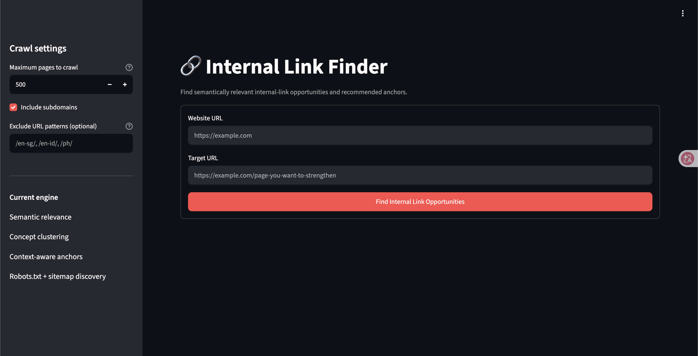
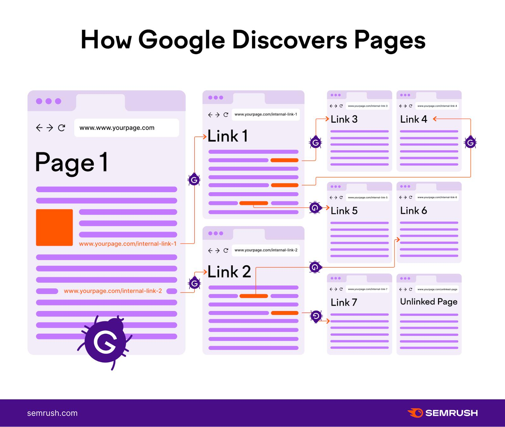

The idea: help SEO professionals discover potential source pages for an important target URL, so they can spend less time searching and more time reviewing whether each link is genuinely useful.
This tool is designed to support an SEO workflow—not replace human judgment. A candidate is only an opportunity after its relevance, context, and existing links have been checked.
Internal linking is one of those SEO activities that sounds simple until you have to do it across hundreds or thousands of URLs.
You may have important landing pages that need stronger contextual connections, blog posts that already cover related topics, and product or category pages that could be better connected to supporting content. The challenge is finding the right connections efficiently.
I wanted to make this process more systematic, so I built an internal link finder—a tool intended to help SEO professionals discover potential internal linking opportunities without relying entirely on manual research.
The problem: finding internal link opportunities takes time
Internal linking is more than adding hyperlinks between pages. A useful link connects related content in a way that helps people navigate a site and helps search engines discover pages and understand relationships between them.
But identifying those links across a large website can involve several repetitive steps:
- Choose an important target page.
- Find other pages that discuss a related topic.
- Review those pages to understand their content and context.
- Check whether a relevant link to the target already exists.
- Identify a natural place where a link could help the reader.
- Prioritize the opportunities worth implementing.
These steps may involve spreadsheets, crawling tools, site searches, and manual content reviews. The challenge isn't always implementing a link—it's discovering the right opportunities in the first place.
Why I decided to build my own tool
I wanted to explore whether a focused tool could reduce the manual effort involved in discovering internal linking opportunities. Rather than treating internal linking as an isolated, page-by-page task, I wanted a repeatable workflow for finding potentially relevant pages to review.
The goal wasn't to automate every SEO decision. It was to make opportunity discovery easier, provide a useful starting point, and leave the final decision about relevance and implementation to a human reviewer.
How the internal link finder fits into the workflow
At a high level, the workflow is about connecting a target page with other pages that may provide relevant context for an internal link. The exact opportunities should always be validated against the live page and the tool's output.
Choose a target
Identify the page you want to support through relevant internal links.
Discover candidates
Find other pages on the site that may discuss related topics.
Review context
Check the source page's content and whether a link would make sense to readers.
Validate and implement
Check existing links, confirm the destination, and add only the opportunities that make sense.

How SEO professionals can use it

1. Support important landing pages
A product, service, or category page may have relevant supporting content elsewhere on the site that doesn't link to it yet. The tool can help surface candidate pages to review as potential sources of contextual links.
2. Connect informational content with commercial pages
A useful article may explain a problem, compare approaches, or answer a question that naturally leads to a relevant product or service. For example, an article about evaluating candidates could link to a relevant assessment product page when that connection genuinely helps the reader.
The goal isn't to insert commercial links everywhere. It's to connect informational and commercial content where the relationship is clear and useful.
3. Make internal linking audits more systematic
A repeatable discovery workflow can help SEO teams review multiple target pages without relying exclusively on memory or ad hoc searches. This can be useful when auditing a large content library or working across multiple sections of a site.
4. Review content architecture
Internal linking opportunities can also reveal whether related pages are connected effectively, whether important destinations are overlooked, and whether a topic cluster could benefit from stronger contextual relationships. The tool can support this analysis, while a broader site-architecture review still requires additional context.
5. Spend less time on repetitive research
The value of automation isn't just speed. It can make a repetitive task easier to perform consistently, freeing up more time to evaluate relevance, context, priorities, and implementation quality.
Internal linking isn't just about adding more links
One principle matters throughout this process: more internal links do not automatically mean better SEO.
Before implementing a potential opportunity, I'd check:
- Topical relevance: Does the source page discuss a subject related to the destination?
- Context: Would the link fit naturally into the surrounding content?
- Existing links: Does the source page already link to the target?
- Destination quality: Is the target page useful, accessible, and appropriate for the reader?
- Priority: Is this a better use of time than other available SEO improvements?
A tool should help surface candidates. An SEO professional should decide which candidates deserve action.
What I learned while testing the tool
Building an SEO tool also means discovering where the first version falls short.
During testing, I encountered a case where a page was crawled, but an expected internal linking opportunity on that page wasn't surfaced. That distinction is important: successfully crawling a URL doesn't guarantee that a tool will identify every relevant opportunity on it.
Crawling, extracting page content, identifying candidate pages, detecting existing links, and evaluating relevance are separate steps. An issue in any of these stages can affect the final result.
This is why testing against real pages matters. A tool should be evaluated not only on whether it can access a website, but also on whether it produces useful and explainable results. Edge cases are an opportunity to improve the workflow, not a reason to treat every result as automatically correct.
What I'd like to improve next
As I continue testing the tool, useful areas to explore include:
- Improving discovery of relevant source pages.
- Making it easier to distinguish existing links from new opportunities.
- Identifying natural linking contexts within page content.
- Helping users prioritize candidates rather than treating every result equally.
- Making results easier to review and incorporate into an SEO workflow.
These are improvement areas, not claims that every capability is already available. The priority is to make the tool more useful in real SEO work.
Final thoughts
I built this tool because discovering internal linking opportunities can require a surprising amount of manual research. A focused tool that addresses one repetitive workflow can be valuable without trying to replace an entire SEO platform.
For me, this project is also a way to combine technical SEO, problem-solving, and software development—and to learn from the gaps that emerge when an idea meets real websites.
If you work in SEO, I'd be interested to hear how you currently discover internal linking opportunities and which parts of the process you find most difficult.
Try the internal link finder
Explore the tool and share feedback on how it could fit into your SEO workflow.
Open the tool ↗ View source code ↗About this article: This is a build-in-public case study about a practical SEO workflow. The tool is intended to assist discovery; validate suggestions against the website before implementing changes.
Found a useful improvement? Share your feedback and help shape the next iteration.